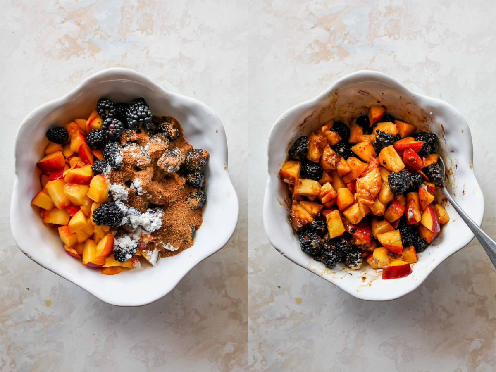
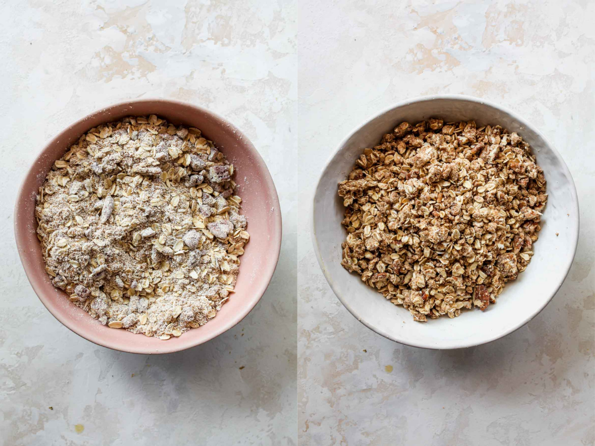
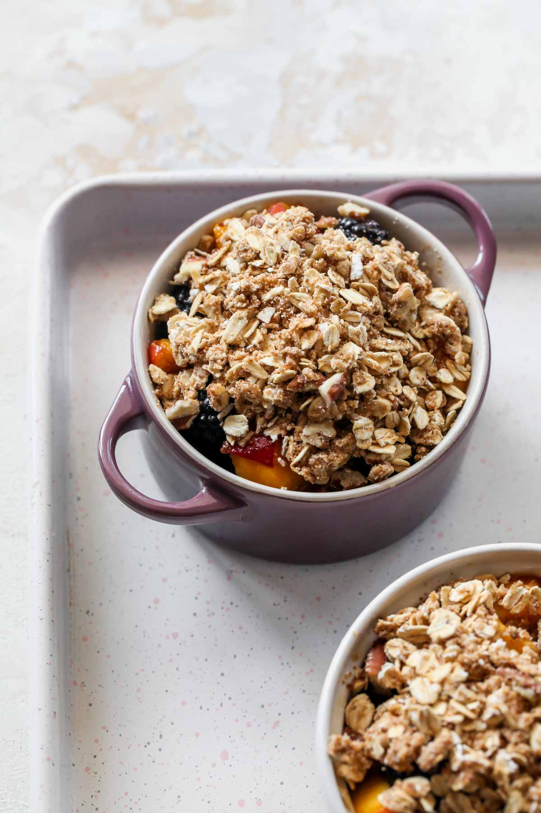
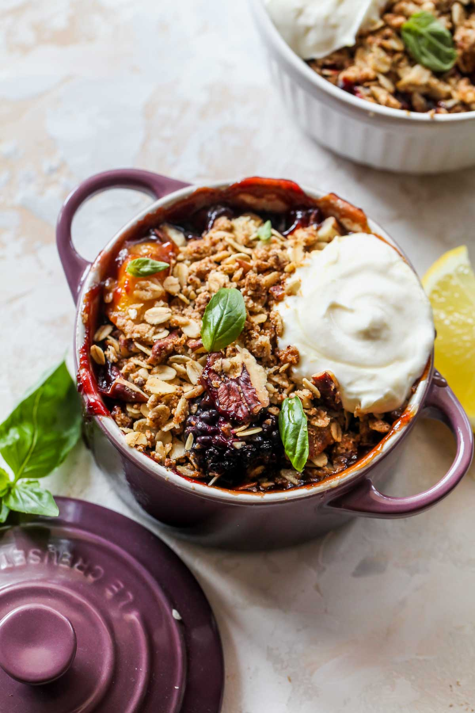

Fruit Crisps with Honey-Whipped Goat Cheese

A fruit crisp emulates all there is to love about a classic fruit pie, except you don’t need to bother with making a tedious pie crust. Instead, crisps are topped with a golden, oat- and nut-filled topping, which adds a crunchy counter to the fruit. My love for these wondrously light and bubbly crisps knows no bounds.
Easy + Healthy Summer Fruit Crisps
The Ingredients
- Peaches: These juicy summer stars SHINE in this crisp. There is no need to peel the peaches, and you can either thinly slice or dice them. Alternatively, you can use nectarines or apricots.
- Blackberries: Sweet-tart blackberries are my favorite summer berry for a reason. In this fruit crisp, they bake down to bubbly, juicy perfection. Alternatively, you can use blueberries or raspberries.
- Coconut Sugar: Subtly sweet like brown sugar but with a slight hint of caramel, coconut sugar is a great alternative to refined sugar. If you don’t any on hand, regular granulated cane sugar also works.
- Lemon: A squeeze of fresh lemon juice brightens up the fruit mixture to the max.
- Oats: A key ingredient for our golden, crispy topping. The oats give the topping the perfect streusel texture, while slipping in some whole-grains. Just be sure to use old-fashioned rolled oats, as opposed to quick oats.
- Oat Flour: To make gluten free fruit crisps, I opt for oat flour. It’s mild in flavor and melds seamlessly with the oats.
- Pecans: For max crunch, I also added chopped pecans. Once you try them in the topping, you’ll never want to make one without them. If you prefer, you can use sliced almonds or omit the nuts entirely, but I do hope you’ll try pecans just once!
- Butter: You can use butter or coconut oil–just make sure it’s hard/chilled.
- Honey-Whipped Goat Cheese: A simple mix of whole-milk Greek yogurt, goat cheese, and honey creates the most decadently delicious topping.
How to Make a Fruit Crisp
-
Step 1: Combine the Fruit Filling
Preheat the oven to 375ºF.

In a large bowl, combine peaches, blackberries, lemon juice, sugar, and cornstarch; stir to combine. Let sit while you prepare oat topping.Step 2: Prepare the Topping
In a separate bowl, combine oats, pecans, oat flour, coconut sugar, and salt. Add butter and work the butter into the oat mixture using your fingers or a pastry cutter. The consistency should resemble very course sand.
 -
Step 3: Bake Fruit Crisp
Spray a 2.5-qt. baking dish or 5 small ramekins with cooking spray. Add fruit mixture, followed by oat-pecan topping. Place on a baking sheet, and bake until fruit juices are bubbling and topping is golden brown, about 30 minutes for ramekins, or 45 minutes for baking dish. 
Step 4: Top with Goat Cheese
Meanwhile, combine yogurt, goat cheese, and honey in a bowl. Beat with a hand-held electric mixer until smooth. Refrigerate until ready to use.

Top fruit crisp(s) with a dollop of Honey-Whipped Goat Cheese and serve immediately.
About Jamie
I'm Jamie; Registered Dietitian, former magazine editor and current food journalist and recipe developer serving up delicious, nutritious recipes.